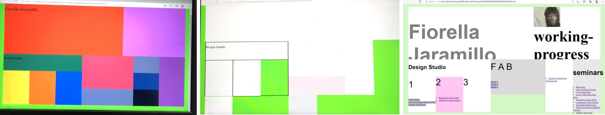

This is the stat of the new term, Fab Academy Workshops and Fab Lives; they seem very interesting to understand how the machines work and how can we use them.
In this first week, we had the option of "jump" to HTML as a new option to develop our websites, and I thought it could be ambitious to try to do it because I´m don´t how to, but I took it as a challenge.
The situation is that HTML requires different codes that "markdown" (also new to me). I started with looking for a nice template that fits me, but it was difficult at the beginning to change some design parameters because I wasn´t realized that they were attached to CSS and JAVASCRIPT, so it was better to start from zero and follow all the tutorials that you can to understand how it works, and from that develop what you can, and improve it if you have time.
It takes two weeks (not fully) to generate it and to do the "main page with correct links", the interesting of using this is that it has many options if we compare it to what we were using before.
It is still in process.
Mayra Ascencio I loved how she organized her website template and the phrases she put as tittles, also she tried many programs, so impresive to do all of that in one week. It is motivatig to imitated that.
Denise Rey She had very clear and well done sketches. I like also how she writes, it seems that she was telling you a story.
Josefina Nano this profile is aesthetics. Also, what I like is the numeration of the processes, this kind of practices help me as well to organize myself.